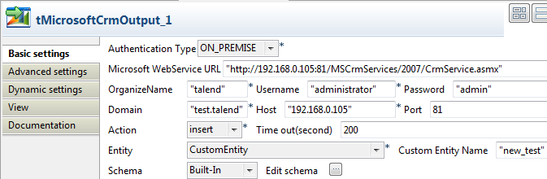
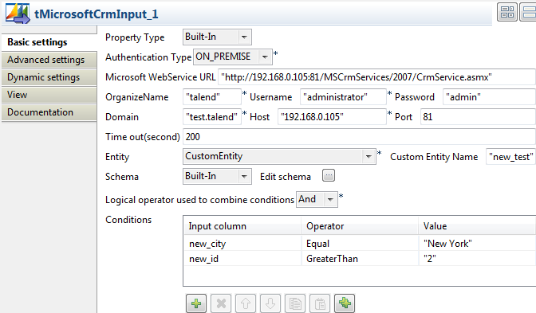

|
Component family |
Business / Microsoft CRM | |
|
Function |
Connects to an entity of Microsoft CRM database via the relevant webservice. | |
|
Purpose |
Allows to extract data from a Microsoft CRM DB based on conditions set on specific columns. | |
|
Basic settings |
Property type |
Either Built-in or Repository. If you are using Talend Open Studio for Big Data, only the Built-in mode is available. |
|
|
|
Built-in: No property data stored centrally. |
|
|
|
Repository: Select the Repository file where properties are stored. The fields that come after are pre-filled in using the fetched data. |
|
|
Authentication Type |
List of authentication types that correspond to specific CRM deployment models. For details, download White paper: Microsoft Dynamics CRM Security Model. |
|
|
Microsoft Webservice URL |
Type in the webservice URL to connect to the Microsoft CRM DB. (Available when On_Premise is selected from the Authentication Type list.) |
|
|
Organizename |
Enter the name of the user or organization, set by an administrator, that needs to access the Microsoft CRM database. |
|
|
Username and Password |
Type in the Webservice user authentication data. |
|
|
Domain |
Type in the domain name of the server on which Microsoft CRM is hosted. (Available when On_Premise is selected from the Authentication Type list.) |
|
|
Host |
Type in the IP address of Microsoft CRM database server. |
|
|
Port |
Listening port number of Microsoft CRM database server. (Available when On_Premise is selected from the Authentication Type list.) |
|
|
Time out (seconds) |
Number of seconds for the port to listen before closing. |
|
|
Entity |
Select the relevant entity in the list. |
|
|
Schema and Edit Schema |
A schema is a row description, i.e., it defines the number of fields that will be processed and passed on to the next component. The schema is either Built-in or stored remotely in the Repository. Click Edit Schema to make changes to the schema. Note that if you make changes, the schema automatically becomes Built-in.. Click Sync columns to retrieve the schema from the previous component connected in the Job. If you are using Talend Open Studio for Big Data, only the Built-in mode is available. NoteIf you make changes, the schema automatically becomes built-in. NoteIn this component the schema is related to the selected entity. |
|
|
Logical operators used to combine conditions |
In the case you want to combine the conditions you set on columns, select the combine mode you want to use. |
|
|
Conditions |
Click the plus button to add as many conditions as needed. The conditions are performed one after the other for each row. Input column: Click in the cell and select the column of the input schema the condition is to be set on. Operator: Click in the cell and select the operator to bind the input column with the value. Value: Type in the column value, between quotes if need be. |
|
Advanced settings |
tStatCatcher Statistics |
Select this check box to gather the Job processing metadata at a Job level as well as at each component level. |
|
Usage |
Usually used as a Start component. An output component is required. | |
|
Limitation |
n/a | |
This scenario describes a four-component Job which aims at writing the data included in a delimited input file in a custom entity in a MicrosoftCRM database. It then extracts specified rows to an output file using the conditions set on certain input columns.
Warning
If you want to write in a CustomEntity in Microsoft CRM database, make sure to name the columns in accordance with the naming rule set by Microsoft, that is "name_columnname" all in lower case.
Drop the following components from the Palette to the design workspace: tFileInputdelimited, tFileOutputDelimited, tMicrosoftCrmInput, and tMicrosoftCrmOutput.

Connect tFileInputDelimited to tMicrosoftCrmOutput using a Row Main connection.
Connect tMicrosoftCrmIntput to tFileOutputDelimited using a Row Main connection.
Connect tFileInputDelimited to tMicrosoftCrmInput using OnSubjobOk connection.
Double-click tFileInputDelimited to display its Basic settings view and define its properties

Set the Property Type to Repository if you have stored the input file properties centrally in the Metadata node in the Repository tree view. Otherwise, select Built-In and fill the fields that follow manually. In this example, property is set to Built-In.
Click the three-dot button next to the File Name/Input Stream field and browse to the delimited file that holds the input data. The input file in this example contains the following columns: new_id, new_status, new_firstname, new_email, new_city, new_initial and new_zipcode.

In the Basic settings view, define the Row Separator allowing to identify the end of a row. Then define the Field Separator used to delimit fields in a row.
If needed, define the header, footer and limit number of processed rows in the corresponding fields. In this example, the header, footer and limits are not set.
Click Edit schema to open a dialog box where you can define the input schema you want to write in Microsoft CRM database.

Click OK to close the dialog box.
Double-click tMicrosoftCrmOutput to display the component Basic settings view and define its properties.
Enter the Microsoft Web Service URL as well as the user name and password in the corresponding fields.
In the OrganizeName field, enter the name that is given the right to access the Microsoft CRM database.
In the Domain field, enter the domain name of the server on which Microsoft CRM is hosted, and then enter the host IP address and the listening port number in the corresponding fields.
In the Action list, select the operation you want to carry on. In this example, we want to insert data in a custom entity in Microsoft Crm.
In the Time out field, set the amount of time (in seconds) after which the Job will time out.
In the Entity list, select one among those offered. In this example, CustomEntity is selected.
Note
If CustomEntity is selected, a Custom Entity Name field displays where you need to enter a name for the custom entity.
The Schema is then automatically set according to the entity selected. If needed, click Edit schema to display a dialog box where you can modify this schema and remove the columns that you do not need in the output.
Click Sync columns to retrieve the schema from the preceding component.

Double-click tMicrosoftCrmInput to display the component Basic settings view and define its properties.
Set the Property Type to Repository if you have stored the input file properties centrally in the Metadata node in the Repository tree view. Otherwise, select Built-In and fill the fields that follow manually. In this example, property is set to Built-In.
Enter the Microsoft Web Service URL as well as the user name and password in the corresponding fields and enter the name that is given the right to access the Microsoft CRM database in the OrganizeName field.
In the Domain field, enter the domain name of the server on which Microsoft CRM is hosted, and then enter the host IP address and the listening port number in the corresponding fields.
In the Time out field, set the amount of time (in seconds) after which the Job will time out.
In the Entity list, select the one among those offered you want to connect to. In this example, CustomEntity is selected.
The Schema is then automatically set according to the entity selected. But you can modify it according to your needs. In this example, you should set the schema manually since you want to access a custom entity. Copy the seven-column schema from tMicrosoftCrmOutput and paste it in the schema dialog box in tMicrosoftCrmInput.

Click OK to close the dialog box. You will be prompted to propagate changes. Click Yes in the popup message.
In the Basic settings view, select And or Or as the logical operator you want to use to combine the conditions you set on the input columns. In this example, we want to set two conditions on two different input columns and we use And as the logical operator.
In the Condition area, click the plus button to add as many lines as needed and then click in each line in the Input column list and select the column you want to set condition on. In this example, we want to set conditions on two columns, new-city and new_id. We want to extract all customer rows whose city is equal to “New York” and whose id is greater than 2.
Click in each line in the Operator list and select the operator to bind the input column with its value, in this example Equal is selected for new_city and Greater Than for new_id.
Click in each line in the Value list and set the column value,
New Yorkfor new_city and2for new_id in this example. You can use a fixed or a context value in this field.
Double-click tFileOutputdelimited to display the component Basic settings view and define its properties.

Set Property Type to Built-In and then click the three-dot button next to the File Name field and browse to the output file.
Set row and field separators in the corresponding fields.
Select the Append check box if you want to add the new rows at the end of the records.
Select the Include Header check box if the output file includes a header.
Click Sync columns to retrieve the schema from the preceding component.